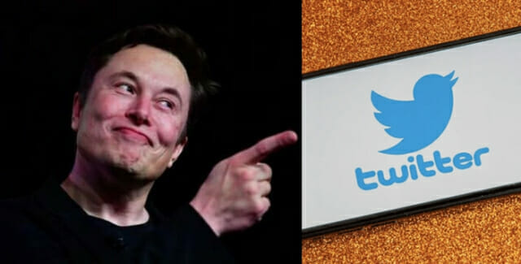

13일(이하 현지 시각) 로이터통신 등 외신에 따르면, 일론 머스크는 자신의 트위터에 “스팸 및 가짜 계정이 실제 사용자의 5% 미만을 차지한다는 계산을 뒷받침하는 세부정보를 확인하기 위해 트위터 인수 작업을 일시 중단했다”고 썼다. 
일론 머스크는 트위터를 440억달러(약 55조원)에 인수하면서 ‘스팸봇’을 제거해 모든 이용자가 진짜라는 것을 증명하겠다”고 강조한 바 있다. 이달 초 트위터는 올해 1분기 수익을 창출할 수 있는 일일 활성사용자 중 5% 미만이 허위 또는 스팸 계정이라고 밝혔다.